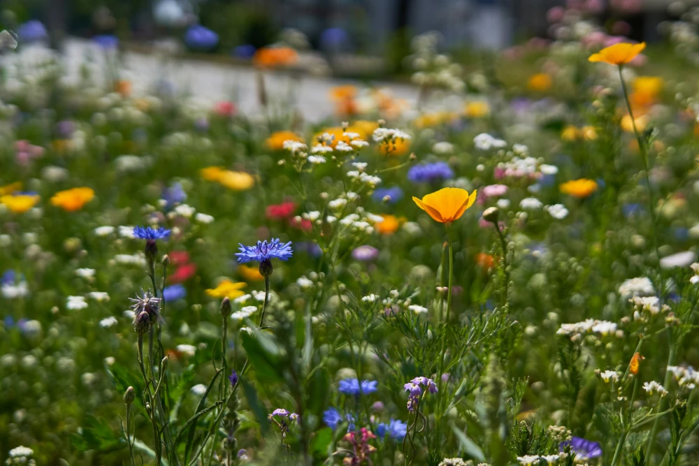

Välkommen til min blogg!

Det är så härligt med sommar igen, jag njuter varje dag av ljuset, solen och värmen. Det är så skönt att kunna sätta sig ute på altanen med en kaffekopp i handen och bara njuta. Eller ta med sig barnen och åka till en strand och bada vare sig det är dag eller kväll, helt underbart! Jag tror sommaren är min favorittid på året just för att det är så ljust och man kan vara ute så mycket.
I år har jag satt igång en del små roliga projekt i trädgården som alla i familjen tycker är roliga. Vi gör dom inte jämt men när vi känner för det och det krävs inte så mycket planering eftersom vi satt upp ett litet pysselbord på altanen så man kan bara sätta sig där när man känner för att göra något litet hantverk. Där målar vi t ex stenar. Vi har samlat ihop fina vackra, släta stenar som är enkla att måla på så målar vi vackra mönster på dom med hjälp av Poscapennor och en annan typ akrylfärg jag köpt. Dom blir fantastiskt vackra och kan läggas i rabatterna som små färgglada konstverk!
Jag har även köpt hem mängder med garn och trådar som man kan använda för att knyta tjusiga armband, band till handväskor eller nyckelringar. Det finns några garn som är grövre och det kan man använda för att knyta ihop amplar till blomkrukor. Det är så coolt att se dessa trådar bli till ett fantastiskt mönster så vackert så att man vill ha det som prydnad för t ex sin hand. Sen har vi köpt hem en riktigt bra blompress för att pressa blommor. Vi har varit ute och plockat en hel del blommor redan som vi lagt i pressen så vi får se hur blommorna ser ut när vi är klara. Är det några som är extra vackra funderar jag på att sätta dom i en liten tavelram och ha på väggen någonstans.
Dom här idéerna på pyssel rekommenderas verkligen. Vi har haft fantastiskt roligt i vår familj och det är nästan alltid någon som går dit och sätter sig för att göra något pyssel när vi är ute på altanen tillsammans. Em ammam sak vi roar oss med på kvällarna i vår familj är att lägga pussel och nu med det vackra vädret har vi till och med kunnat sitta ute och lägga pussel på kvällen. Men om man gör det rekommenderar jag en bra lampa så att man ser färger och detaljer ordentligt. Även om det är mycket ljusare ute nu räcker det inte på kvällstid för pussel.
Ha en skön sommar och semester!